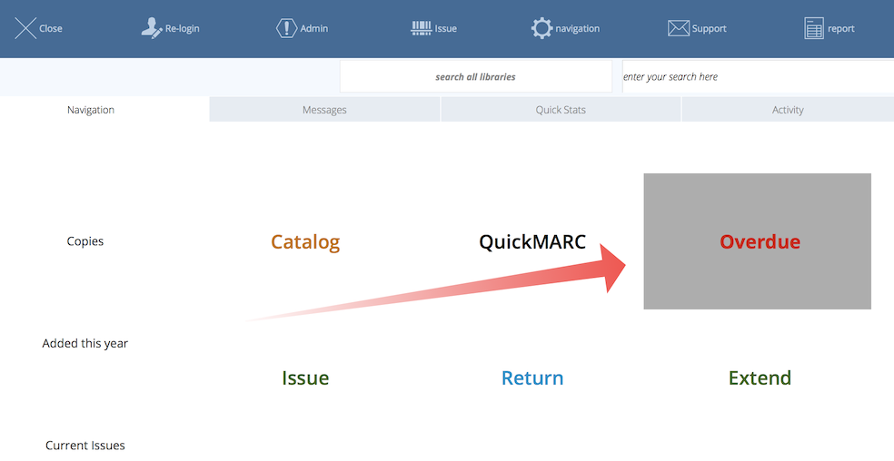
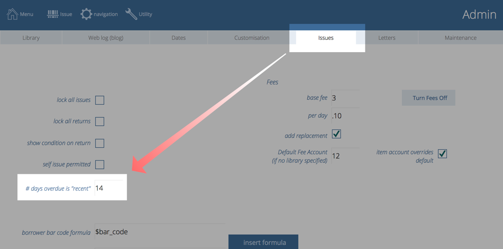
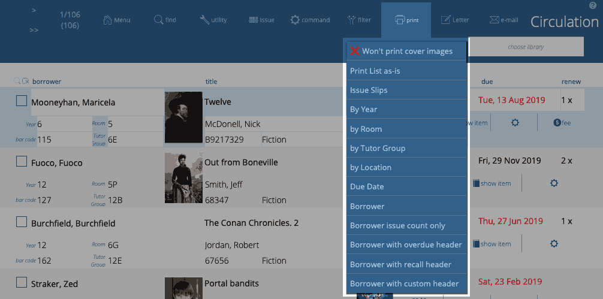

Overdues
Overdue items are those that have been issued and are due before the current date. When you find your overdues, you can generate a variety of reports or letters from those found records.
The general concept is:
- find the desired overdue records
- perform an action such as print a report (such as an overdue list grouped by class) or create and send overdue letters by email.
Finding Overdues
There are multiple methods to find overdue items
From the Main Menu
Click Reports->Overdue button at the top right and choose one of the common overdue reporting options.

Or, if you have configured your Main Menu buttons to include an "Overdue" button, then click that.

From Circulation
Click Filter->Overdue at the top of the circulation list
"Recent" overdues
Athenaeum can find “Recent overdues" and “Less recent overdues" under the circulation filter button.
“Recent overdues” are items that are overdue by no more than the value you enter here in the preferences:

“Less recent overdues” are items that are overdue by more than the value you enter here.
These options simplify the task of sending different overdue notices depending upon how overdue items are.
Manual Search
As with most other areas of Athenaeum, you can manually search for issues that are overdue by the criteria you specify.
- Go to Circulation
- Click the Find button at the top
- Enter search criteria matching your desired overdue definition
- Click the Find button again or press the Enter key
This search works like other detailed searches in Athenaeum as you can perform very simple searches, create powerful compound searches using multiple criteria with boolean "OR", "AND" and "NOT".
Processing Overdues
When you have found the overdues using one of the options described above, you have a "found set"1 of overdue records.
With that found set of overdues, you might:
- send letters
- warning letters
- overdue letters
- recall letters
- advisory issue lists
- print report
- add late fees in bulk
- bulk return
- list borrowers and de-activate them or
- adjust the dates so that the items are not overdue
Reports/Letters
The various print reports and letters can be found in the Print menu and can output to paper or PDF.

When you run one of these reports or letters, the output is first previewed to screen allowing you to check the output. Press the Enter key on the keyboard to continue to the Print dialog box. When that is displayed, pressing Enter will print. Pressing Esc (escape) will cancel the print.
These are:
- Include cover images/Won't include cover images
- the printed reports will include cover images or will not allowing the printed reports to be more compact
- Print List as is
- maintains the current sort order and prints the details
- Issue Slips
- prints the list of issues as either fixed height slips or compact (variable height) slips. Compact slips are grouped either by borrower group 2 (e.g. "room" or "vertical form") or custom field 1 (e.g. "tutor group") with a page break between each grouping and where each "slip" is only as tall as is required to fit the information.
Note
The header line and message line are drawn from Admin->Letters "circulation slips header" and "circulation slips message"
Fixed size slips are also sorted by custom field 2 with no additional page breaks. Each slip is a fixed height (7 lines) which makes the printed output suitable for guillotining in bulk to hand out to library patrons.
Compact slips can optionally include the title cover image as well as the replacement cost (these are not available on the fixed size slips)
- By borrower "group 1" (e.g. "year")
- creates a printed report grouping issues by borrower group 1 (using the name defined in admin), sorting the list by group 1 and borrower name with a page break on each group
- By borrower "group 2" (e.g. "room" or "vertical form")
- creates a printed report grouping issues by borrower group 2 (using the name defined in admin), sorting the list by group 2 and borrower name with a page break on each group
- By borrower "custom 1" (e.g. Tutor Group)
- creates a printed report grouping issues by borrower custom field 1 (using the name defined in admin), sorting the list by custom 1 and borrower name with a page break on each group
- By Location
- groups the report by location of each copy in the library, with a page break for each location - useful when you want to go hunting for items put back on shelves and not returned
- Due Date
- reports the found set of issues sorting by date the borrower - there are no page breaks between dates.
- Borrower
- A continuous listing of the found set of issues, each issue grouped by borrower, sorted alphabetically then by due date.
- Borrower issue count only
- produces a report of the found set of borrowers, grouped either by "group 2" (e.g."room" or "vertical form") or by "custom 1" (e.g. "Tutor group"), showing the name of the borrower, their number of issues and the number of those issues that are overdue. This report explicitly does not include the titles of the items for privacy reasons.
- Borrower with overdue header
- a pseudo letter, one page per borrower listing the borrower's issues. At the top of each page is the text retrieved from the template called "borrower_overdue_header". This text does NOT substitute tokens, it is just plain text.
- Borrower with recall header
- a pseudo letter as for the "borrower with overdue header", one page per borrower listing the borrower's issues. At the top of each page is the text retrieved from the template called "borrower_recall_header". This text does NOT substitute tokens, it is just plain text.
- Borrower with custom header
- a pseudo letter, one page per borrower listing the borrower's issues. At the top of each page is the text retrieved from the template called "borrower_custom_header". This text does NOT substitute tokens, it is just plain text.
Tips
Headings for Print List as is, by borrower..., by location, due date can be changed.
Default heading
For example: you can specify a default heading for some of the issue list reports in the Issues tab of Admin
Note
hold the shift key when starting the above listed reports to specify a heading different to the default heading
The short content of the Issue Slips (or circulation slips) is set in Admin->Issues:
Letters
- Overdue Letters
- generates letters that can be printed using the wording from letter template "Overdue from Circulation"
- Overdue Strong
- generates letters that can be printed using the wording from letter template "Overdue Strong"
- Recall Detailed
- generates letters that can be printed using the wording from letter template "Recall Detailed"
- Create Issued List Letters to group2
- creates letters that can be printed or emailed, one letter per "group2" (e.g. Room). The addressee for each group2 is defined in borrower->utility->list group2. The format of the letter is defined by the "room_issue_list" template.
- Create Overdue Letters to group2
- creates letters that can be printed or emailed, one letter per "group2" (e.g. Room). The addressee for each group2 is defined in borrower->utility->list group2. The format of the letter is defined by the "room_overdue_list" template.
The email reports will sort the list by borrower and email each borrower's listing to email 1 or 2 as chosen.
Add fees in bulk
Now you have found the set of overdue circulation records you wish to process, you might choose to add a fee to them.
Do this with Circulation->Utility->Add fees to XX issues:
Confirm the amount (a flat fee or the replacement fee) and enter a fee reason at the next dialogue.
note: an issue may have multiple fees associated with it - if you so desire
Daily Server based issue notifications
If you are running the recommended configuration of hosted Athenaeum or Athenaeum with FileMaker Server, you may configure automated email notification of issues that are due, overdue or nearly due.
This is covered in more detail in the automation chapter.
Bulk return
You can bulk return a found set of issues using command->Return these X issues
This is a quick way to effect their return. Athenaeum will process each issue and take any action you have defined in Admin, such as levying fees.
List borrowers
Find any set of issues and then list the borrowers for those issues.
You can then manipulate the borrower records such as changing the status of the borrowers (e.g. setting them to a restricted borrower type), de-activating the borrowers or generating letters.
Adjust the due dates
Reset the due dates for the found set of issues by choosing command->reset these issues:
You might do this to make the found set of issues NOT overdue for whatever reason you see fit or to extend the issues of the same issues without using the Extend function (which increments the number of extensions allowed for each issue). As the library administrator, you can ultimately always tell Athenaeum what you want it to do!
-
the found set is used repeatedly in Athenaeum - we highly recommend you learn this concept, as it controls many aspects of reporting ↩